The Climb, floor by floor: 1 to 30
Each floor played in the real game (headless browser, time stepped by hand): the route bot from camp to gate, every person, pack, door and the ruler, the map, the phone view, the props probe, the texts against the lore. Faults that were clearly slips were fixed (blue); bigger ones or matters of taste are listed for you (red).
For you to decide
- Floor 1: The ruler's name: Captain or Admiral? The floor calls its ruler “the Drowned Captain” (keeper's line, the lair, the quest, the boss card); the Codex (climb/rulers.md, climb/sea.md) says the Drowned Admiral rules floors 1 and 2, and floor 2 calls him the Drowned Admiral. Its model is the Admiral's. Renaming floor 1's to “the Drowned Admiral” is five strings in gen/harbour.ts and a re-bake; say if you want it.
- Floor 1: On the map, “The gate up” sits on “The camp”. The gate is beside the camp on every floor, so their two labels overlap on the M map (more on a phone). Small; a fix would nudge one label in map.ts.
- Floor 6: The Pearl Tyrant is a man in the Codex, a crowned woman on the floor. The Codex (climb/rulers.md): “A pearl merchant ... He drowned holding the strongbox.” Floor 6 draws him with the Gull Queen's model (sea_queen, pieces/rulerModels.ts RULER_OF[6]), a crowned woman in a gown. Either the Codex says “she”, or floor 6 takes the Admiral's or the Judge's model (one number in RULER_OF; the three Sea models would then not be three floors each).
- Floor 7: Rulers the Codex calls beasts or things are drawn as people. The ruler models are robed giants (their line-ups were accepted on 2026-11-15, STATUS “Decided”), but the Codex (climb/rulers.md) describes many of them otherwise: the Bell Below “the harbour's old bell” (floor 7, in the Tide Judge's figure), the Lantern Leviathan “a great fish” (8), the Lantern Root, a root with an amber lantern (17), the Grey Oak, a dead oak (18), the Mire Heart, a bog (19), and in the Sands the Scarab Colossus “a beetle the size of a house” (21), the Scarab King, its son (22), the Dune Colossus “a giant of sand and stone” (23), the Brass Sphinx “a lion of brass with a woman's face” (24), the Glass Serpent (25). Since the figures are accepted, the likely fix is the Codex's words (these as the realm's people who carry those names, or the Tower's echo of them in a giant's shape); else new models (Blender, one at a time). Yours to say.
- Floor 17: Meeting yourself as the rival. The bot played Lyra, and floor 17's rival is Lyra: “Another climber. I am Lyra.” Any hero meets this on the floor whose rival (or gatekeeper) is that same hero. The fight is a mirror duel and works. If it should read better: the rival's line could say so when the hero is the same (people.ts builds the card), or the floor could pick another rival for that hero (a design call).
- Floor 20: The same words on floor 50 (the War's crown, not my chapter). Floor 50 says “Ash and Ember has fallen”, “Ash and Ember is behind” and “Ash and Ember waits behind” (src/tower/world/gen/war.ts, baked in floors/gen/war-50.ts). The fix would be the same as here: a plural verb when the ruler is Ash and Ember, then a re-bake of floors 42 to 50. Left to the agent of floors 31 to 50.
- Floor 22: Named enemies are all “it”. On the made floors the keeper says “Fell it ... while it does” of every named enemy, so the Dune Mother is “her” on floor 21 and “it” here, as are Mother Kelp, Barnacle Bess, the Brine Widow, Grandmother Thorn, the Bark Widow. For beasts and things “it” is right. Giving the women their “her” is a word list in each chapter's maker (sea.ts, wood.ts, sands.ts...) and a re-bake; a matter of voice, so yours to say.
Fixed
- Floor 1: The market had two names. The map, the keeper and the place said “the fish market”, but the main quest's step said “Clear the oyster market” and its waystone was “The oyster market stone”; the step “Light the lighthouse and the signal fire” named a place the map calls “The beacon”. Cause: the floor's maker (src/tower/world/gen/harbour.ts) renamed the places but not the words that name them. Now the steps and the stone follow the new names (only these three strings changed in the baked floor).
- Floor 2: Names on the M map lay over each other (every floor). Two places or a door close together wrote their names in the same spot: “The signal fire” ran into “The drowned chapel”, “The gate up” sat on “The camp” (on every floor: the gate is beside the camp). Now a name that would cover one already written steps one line away (a door's up, a place's down). Only the map's drawing changed (src/tower/world/map.ts).
- Floor 4: “The salt pans is overrun”. The keeper's greeting is made from the main place's name with “is overrun”; a plural place read wrong (here, and “The drying racks is overrun” on floor 5). The sea's maker (src/tower/world/gen/sea.ts) now says “are” for a name ending in s; floors 2 to 10 re-baked, and only these two lines changed.
- Floor 12: “The Lost Spade” asked for a bundle. The Wood's maker names the camp giver's second quest “The Lost Spade”, “The Lost Lantern” or “The Lost Bundle”, but its words always spoke of a bundle. Now the thing dropped, carried and named on the HUD is the one in the quest's name (src/tower/world/gen/wood.ts; floors 12 to 20 re-baked: only those words changed, on seven floors; it is still drawn as a bundle in the hand).
- Floor 13: The keeper called the Thorn Mother “it”. “... cut the roots that feed it, and its door opens”, for the Thorn Mother, the Moss Warden, the Antler King, the Briar Witch, and “Ash and Ember waits” on the crown. The Wood's maker now gives each its word: her, him, them (a tree, a root or a bog stays “it”). src/tower/world/gen/wood.ts; floors 12-20 re-baked, only those lines changed (five floors).
- Floor 20: “Once Ash and Ember has fallen”. The gate's lock spoke of the twin crown in the singular. The Wood's maker now says “have” for them (with floor 13's fix, the keeper already says “Ash and Ember wait ... feed them, and their door opens”). gen/wood.ts; re-baked, only that line changed.
- Floor 23: The lair said “a quest about a seal” for a key. The Sands' maker picks the main quest's item from the brass seal, the sun key and the scarab seal, but the lair's lock always said “The Star-Reader has a quest about a seal.” Here the item is the sun key. Now the lock names the floor's own item (“... a quest about the sun key”). gen/sands.ts; floors 22 to 30 re-baked, only that line changed on each.
Floors
I. The Sea
Floor 1: The Drowned Harbour
Plays from the camp to the gate with no error and no stuck spot; every person, pack, door and the ruler work, the ruler in its own model. One slip in the words fixed (the market had two names); the ruler's name left for you.
fixedThe market had two names. The map, the keeper and the place said “the fish market”, but the main quest's step said “Clear the oyster market” and its waystone was “The oyster market stone”; the step “Light the lighthouse and the signal fire” named a place the map calls “The beacon”. Cause: the floor's maker (src/tower/world/gen/harbour.ts) renamed the places but not the words that name them. Now the steps and the stone follow the new names (only these three strings changed in the baked floor).


listThe ruler's name: Captain or Admiral? The floor calls its ruler “the Drowned Captain” (keeper's line, the lair, the quest, the boss card); the Codex (climb/rulers.md, climb/sea.md) says the Drowned Admiral rules floors 1 and 2, and floor 2 calls him the Drowned Admiral. Its model is the Admiral's. Renaming floor 1's to “the Drowned Admiral” is five strings in gen/harbour.ts and a re-bake; say if you want it.

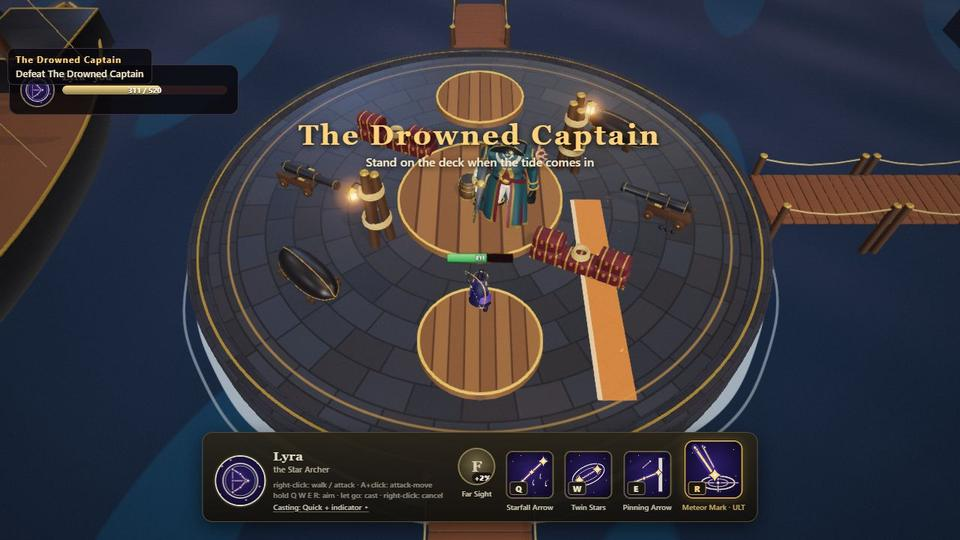
listOn the map, “The gate up” sits on “The camp”. The gate is beside the camp on every floor, so their two labels overlap on the M map (more on a phone). Small; a fix would nudge one label in map.ts.

okThe props the probe flagged. 14 “float” are pines on the hills past the edge (the probe measures them against the play ground, not the hill under them) and boats on the sea; 56 “gap” are pines on the cliff top whose root side hangs over the cliff. Each looked at from low: they stand on their ground.


What was measured
- Reachable from the camp: 34968 m²; 51 spots of the floor's data, 0 cut off
- Props probe: 14 float, 56 gap, 0 buried, 0 in cover (each looked at; see below)
- Grass and small things on ground steeper than 31°: 0
- Packs table for the open world (server/climb-packs.mjs): matches
- Route bot (Lyra): cleared in 1604 game s, every checkpoint reached; 23 kills, 2 falls, stars 1101; ruler tries 1, gate tries 3; page errors 0
- Ruler: The Drowned Captain (Anchor, cannon and tide), model models/tower/sea_admiral_v4.glb, loaded yes after 2419 ms of real time
- Frame check at the busiest spot (-71, -67), 5 units awake: median 11.4, 10.8, 10.4 ms, p95 18, 17.6, 14.7 ms (desktop, machine shared: rough)
- Console errors while taking the pictures: 0
Not checked: the shared packs online (alone a cleared pack does not come back: as designed, pipeline/designs/climb-open-world.md); buying at the trader (the card and prices shown; the bot's heals use it)

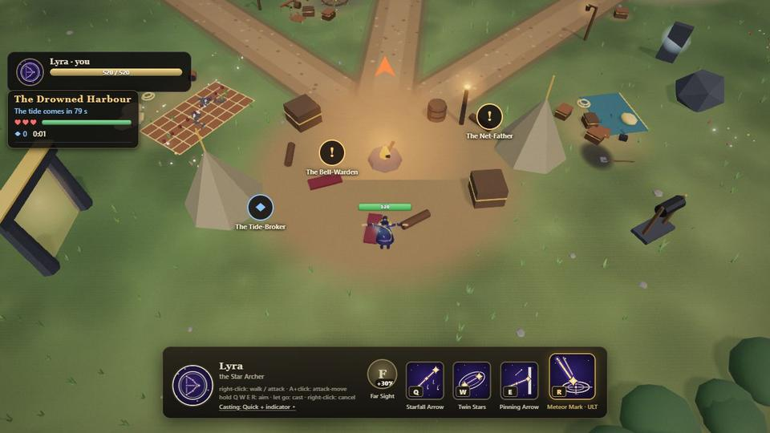


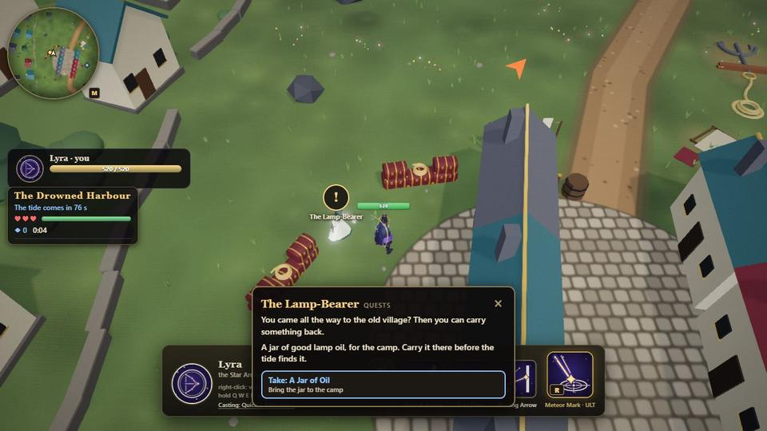

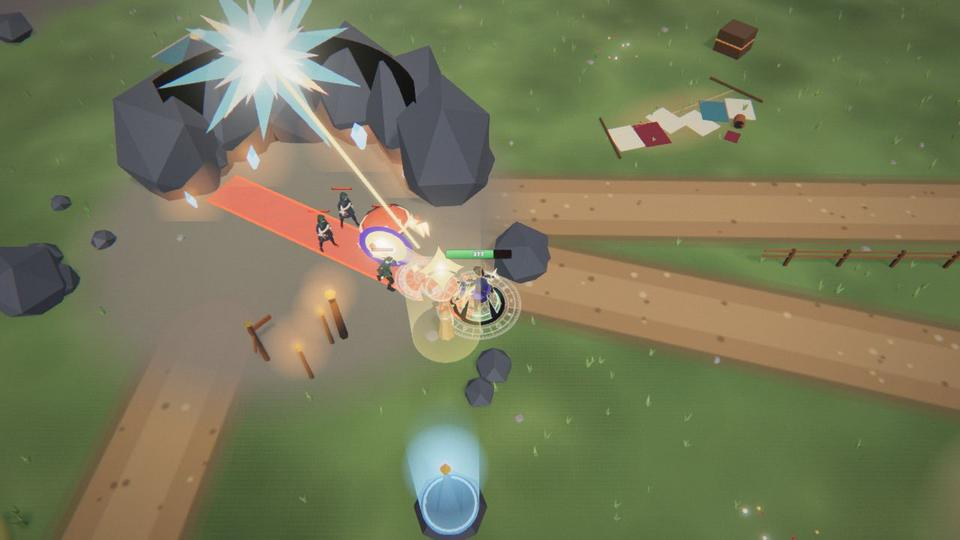


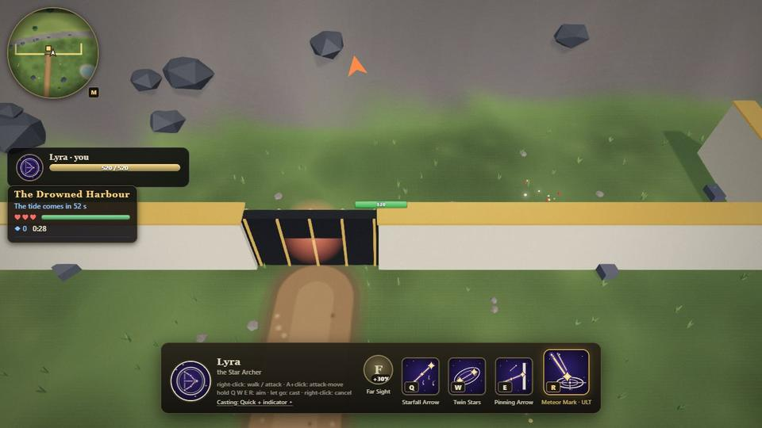

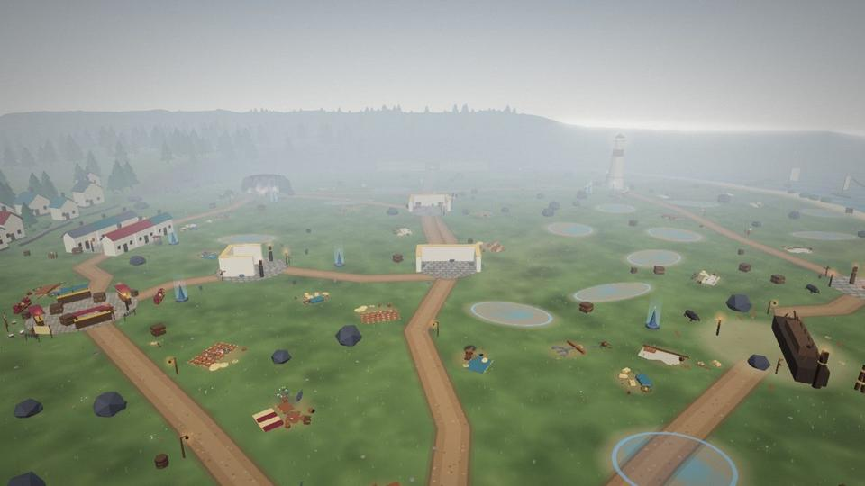

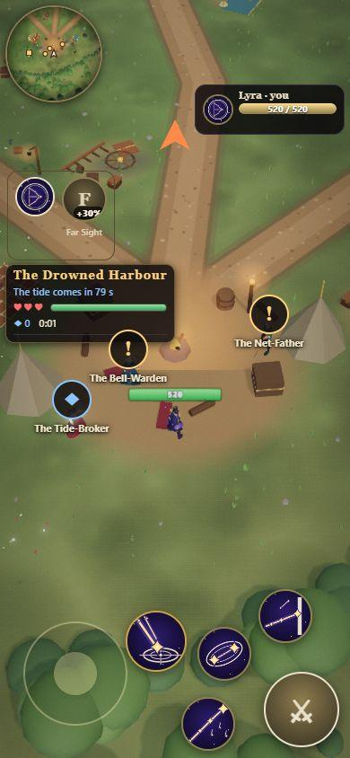

Floor 2: The Salt Docks
Clean: the route bot cleared it with all four stars and no fall, the rival (Hank), the trial, the ruler (the Drowned Admiral, own model) and the gate (Vesper) all played; no console error. The M map's names stood on each other: fixed for every floor.
fixedNames on the M map lay over each other (every floor). Two places or a door close together wrote their names in the same spot: “The signal fire” ran into “The drowned chapel”, “The gate up” sat on “The camp” (on every floor: the gate is beside the camp). Now a name that would cover one already written steps one line away (a door's up, a place's down). Only the map's drawing changed (src/tower/world/map.ts).

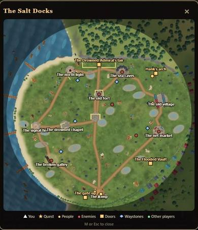

okThe props the probe flagged. “Float”: pines on the hills past the edge, boats on the sea, and the slats of a jetty 9 cm over the sand; “gap”: houses on the hillside (they stand on their stone plinths, as set right in the props pass) and pines on the cliff top; one stone 22 cm under the sand. Looked at from low: nothing in the air.

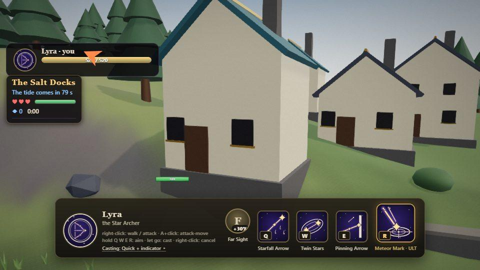
What was measured
- Reachable from the camp: 34918 m²; 51 spots of the floor's data, 0 cut off
- Props probe: 25 float, 54 gap, 1 buried, 0 in cover (each looked at; see below)
- Grass and small things on ground steeper than 31°: 0
- Packs table for the open world (server/climb-packs.mjs): matches
- Route bot (Lyra): cleared in 1729 game s, every checkpoint reached; 23 kills, 0 falls, stars 1111; ruler tries 1, gate tries 1; page errors 0
- Ruler: The Drowned Admiral (Fleet, cannon and tide), model models/tower/sea_admiral_v4.glb, loaded yes after 5095 ms of real time
- Frame check at the busiest spot (14, -54), 5 units awake: median 10.7, 11.3, 11 ms, p95 17.5, 17.2, 14.8 ms (desktop, machine shared: rough)
- Console errors while taking the pictures: 0
Not checked: the shared packs online; buying at the trader (card and prices shown)


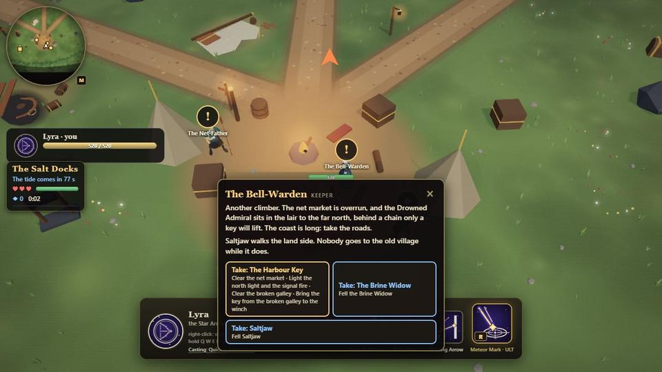


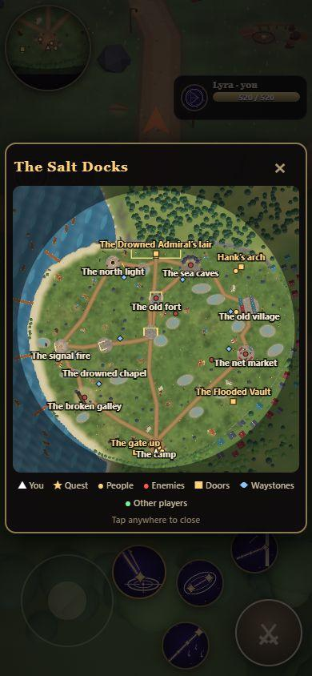
Floor 3: Gull Point
Clean: cleared with four stars and no fall; the rival (Nyx), the trial (a horde), the ruler (the Salt King, in the Admiral's model tinted) and the gate (Tempo) all played; no console error, every spot reachable, the texts match the Codex (the Salt King rules floor 3).
okA boss that stands between the camera and the hero fades. In the first pictures the Salt King looked see-through. That is the duel's own rule (duel.ts: a boss that hides the hero fades to a tenth), not a fault: with the hero on its other side it stands in full.

okThe props the probe flagged. As on floors 1 and 2: pines on the hills and the cliff top, boats on the sea, a stone just under the sand; two pines whose trunks touch the edge of a cliff-top rock. Nothing in the air.
What was measured
- Reachable from the camp: 34953 m²; 51 spots of the floor's data, 0 cut off
- Props probe: 16 float, 80 gap, 1 buried, 2 in cover (each looked at; see below)
- Grass and small things on ground steeper than 31°: 0
- Packs table for the open world (server/climb-packs.mjs): matches
- Route bot (Lyra): cleared in 1480 game s, every checkpoint reached; 23 kills, 0 falls, stars 1111; ruler tries 1, gate tries 1; page errors 0
- Ruler: The Salt King (Crowned in brine), model models/tower/sea_admiral_v4.glb, loaded yes after 4447 ms of real time
- Frame check at the busiest spot (-76, 39), 6 units awake: median 11.8, 9.4, 9.6 ms, p95 18, 11.8, 12.8 ms (desktop, machine shared: rough)
- Console errors while taking the pictures: 0
Not checked: the shared packs online; buying at the trader (card and prices shown)


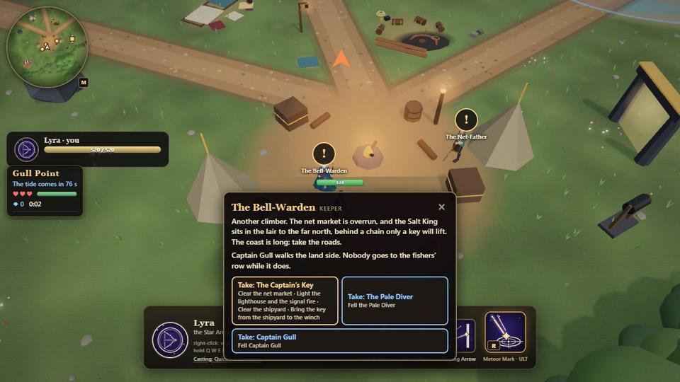


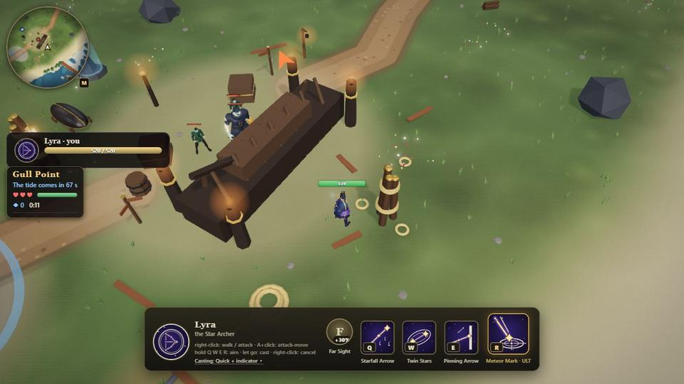

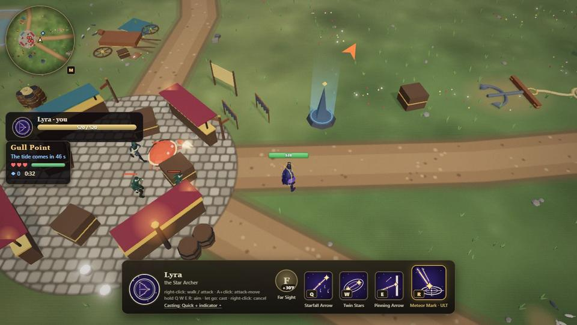

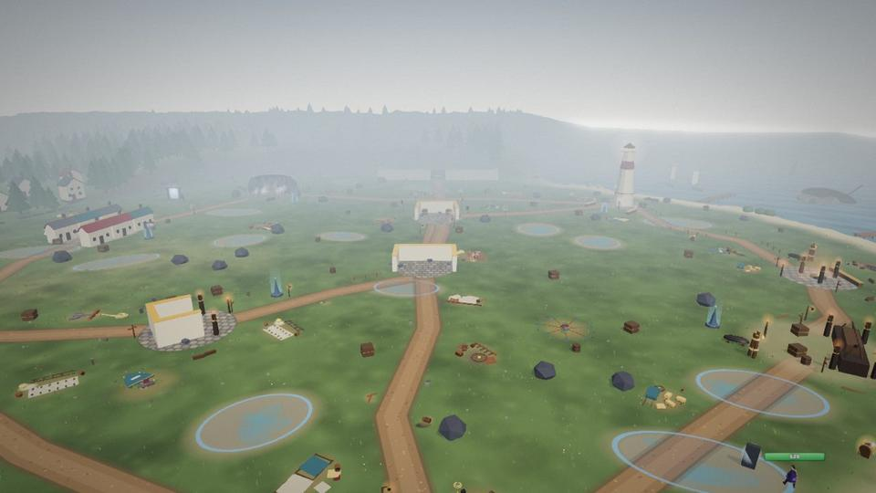

Floor 4: The Sunken Mile
Clean but for one line of the keeper's: cleared with four stars and no fall; the rival (Auriel), the trial, the ruler (Mother of Wrecks, in the Gull Queen's model) and the gate (Ada) all played; no console error, every spot reachable.
fixed“The salt pans is overrun”. The keeper's greeting is made from the main place's name with “is overrun”; a plural place read wrong (here, and “The drying racks is overrun” on floor 5). The sea's maker (src/tower/world/gen/sea.ts) now says “are” for a name ending in s; floors 2 to 10 re-baked, and only these two lines changed.

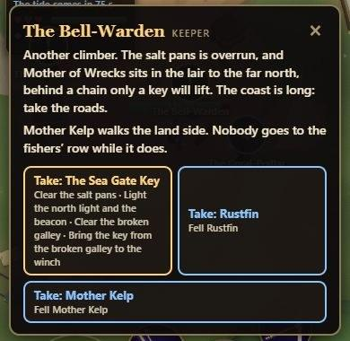

okThe props the probe flagged. Pines on the hills and the cliff top, boats on the sea, three shells 10 cm over the sand, the gold edge of the lair's wall where it runs into the hill (seen and left in the props pass). Nothing in the air.
What was measured
- Reachable from the camp: 35004 m²; 51 spots of the floor's data, 0 cut off
- Props probe: 18 float, 58 gap, 1 buried, 0 in cover (each looked at; see below)
- Grass and small things on ground steeper than 31°: 0
- Packs table for the open world (server/climb-packs.mjs): matches
- Route bot (Lyra): cleared in 1613 game s, every checkpoint reached; 23 kills, 0 falls, stars 1111; ruler tries 1, gate tries 1; page errors 0
- Ruler: Mother of Wrecks (She keeps what sinks), model models/tower/sea_queen_v4.glb, loaded yes after 5111 ms of real time
- Frame check at the busiest spot (20, -54), 6 units awake: median 13.3, 14.1, 11.2 ms, p95 24.8, 21.7, 16.8 ms (desktop, machine shared: rough)
- Console errors while taking the pictures: 0
Not checked: the shared packs online; buying at the trader (card and prices shown)

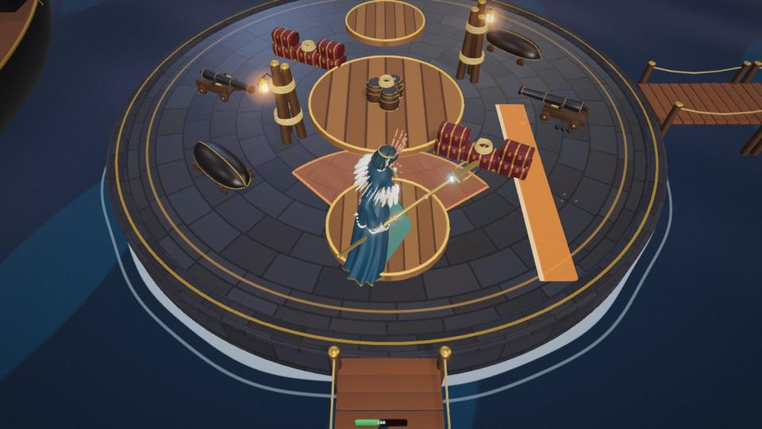


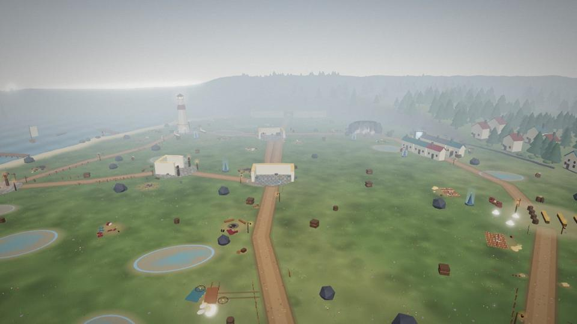

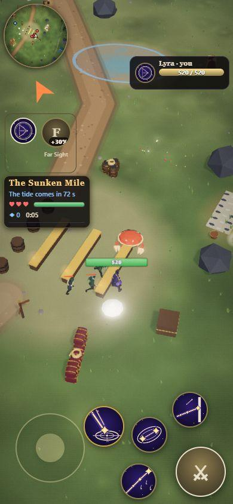
Floor 5: Wreckers’ Cove
Clean: cleared with four stars and no fall; the rival (Sefu), the trial (The Salt Cellar), the ruler (the Tide Judge, own model) and the gate (Bram) all played; no console error, every spot reachable. The keeper's “drying racks are overrun” is the line fixed on floor 4.
okThe props the probe flagged. Pines on the hills and the cliff top, boats on the sea, houses on their plinths on the hillside. Nothing in the air.
What was measured
- Reachable from the camp: 34930 m²; 51 spots of the floor's data, 0 cut off
- Props probe: 19 float, 68 gap, 0 buried, 0 in cover (each looked at; see below)
- Grass and small things on ground steeper than 31°: 0
- Packs table for the open world (server/climb-packs.mjs): matches
- Route bot (Lyra): cleared in 1763 game s, every checkpoint reached; 23 kills, 0 falls, stars 1111; ruler tries 1, gate tries 1; page errors 0
- Ruler: The Tide Judge (Every tide a sentence), model models/tower/sea_judge_v4.glb, loaded yes after 3689 ms of real time
- Frame check at the busiest spot (-64, 36), 6 units awake: median 3.2, 3.5, 4.3 ms, p95 4.8, 4.5, 6.5 ms (desktop, machine shared: rough)
- Console errors while taking the pictures: 0
Not checked: the shared packs online; buying at the trader (card and prices shown)

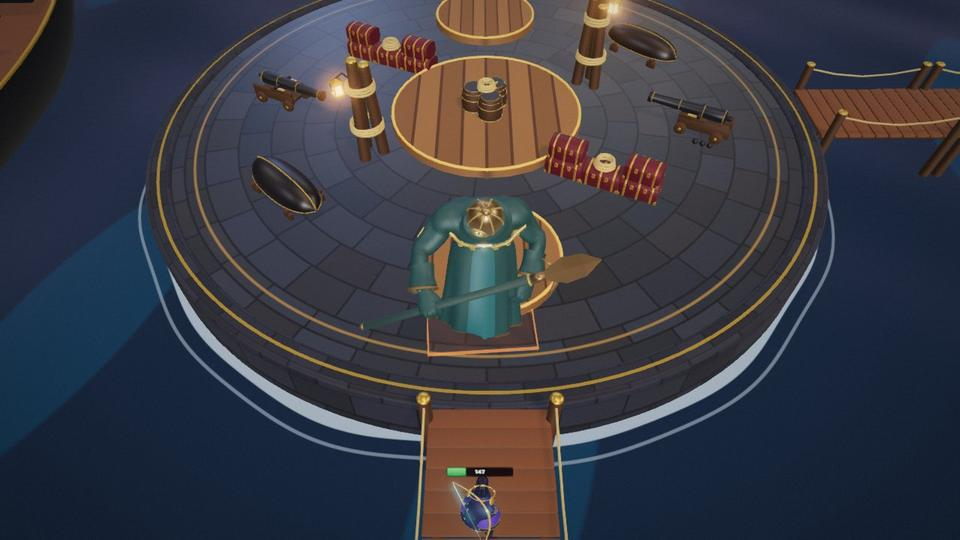

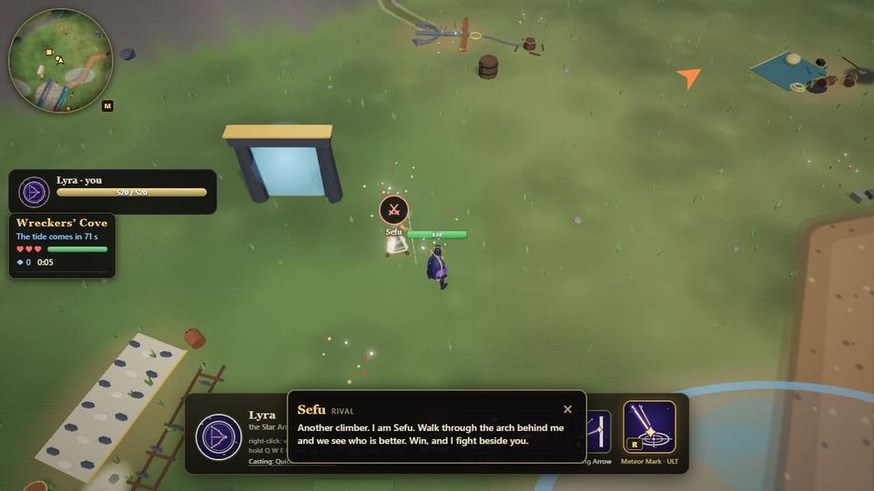

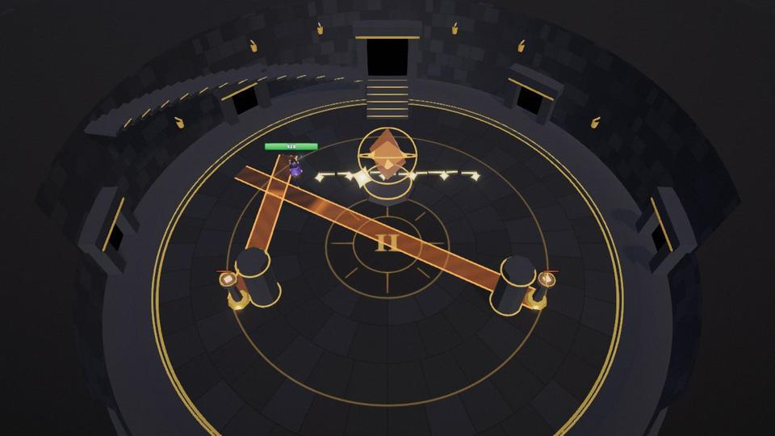


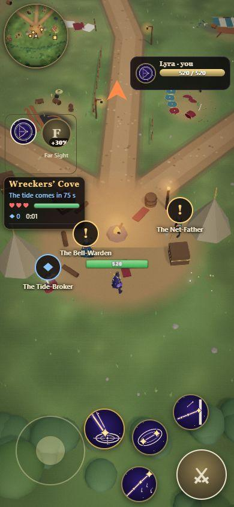
Floor 6: The Lantern Coast
Plays clean: cleared, no console error, every spot reachable; the rival (Wick), the trial, the ruler (the Pearl Tyrant) and the gate (Mum) all played. The bot needed four tries at Mum's gate (balance, not a fault). One lore mismatch for you.
listThe Pearl Tyrant is a man in the Codex, a crowned woman on the floor. The Codex (climb/rulers.md): “A pearl merchant ... He drowned holding the strongbox.” Floor 6 draws him with the Gull Queen's model (sea_queen, pieces/rulerModels.ts RULER_OF[6]), a crowned woman in a gown. Either the Codex says “she”, or floor 6 takes the Admiral's or the Judge's model (one number in RULER_OF; the three Sea models would then not be three floors each).

okThe props the probe flagged. Pines on the hills and the cliff top, boats on the sea, houses on their plinths, the lair wall's gold edge into the hill, two stones and a tuft just under the ground. Nothing in the air.
What was measured
- Reachable from the camp: 34872 m²; 51 spots of the floor's data, 0 cut off
- Props probe: 12 float, 56 gap, 2 buried, 0 in cover (each looked at; see below)
- Grass and small things on ground steeper than 31°: 0
- Packs table for the open world (server/climb-packs.mjs): matches
- Route bot (Lyra): cleared in 1964 game s, every checkpoint reached; 23 kills, 3 falls, stars 1100; ruler tries 1, gate tries 4; page errors 0
- Ruler: The Pearl Tyrant (Hoarder of the shallows), model models/tower/sea_queen_v4.glb, loaded yes after 5659 ms of real time
- Frame check at the busiest spot (15, -74), 5 units awake: median 13.9, 12.1, 13.8 ms, p95 24.4, 20.8, 23 ms (desktop, machine shared: rough)
- Console errors while taking the pictures: 0
Not checked: the shared packs online; buying at the trader (card and prices shown)


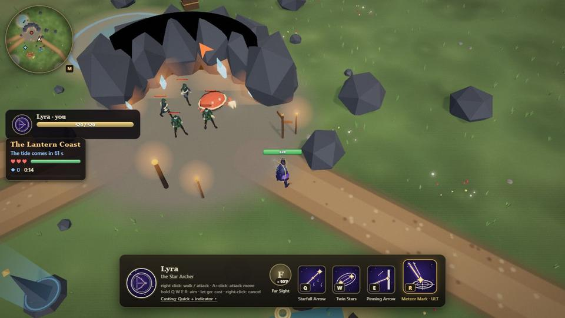

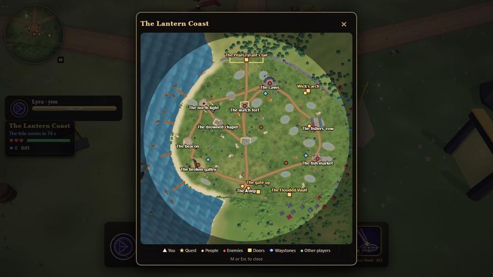

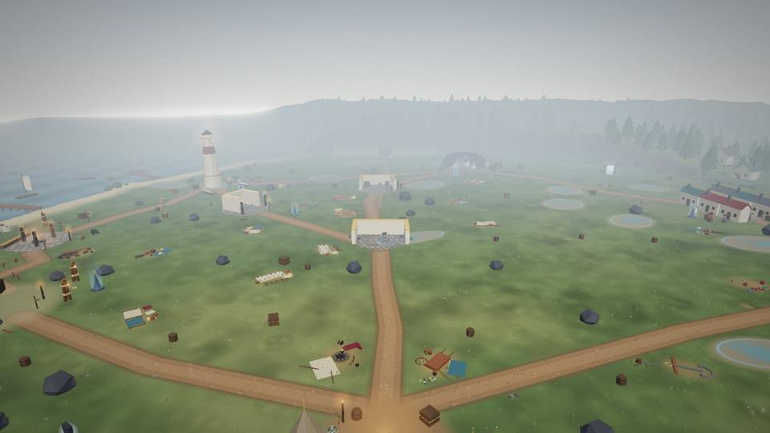

Floor 7: Kelp Hollow
Plays clean: cleared, no console error, every spot reachable; the rival (Silvane), the trial (a horde), the ruler (the Bell Below; the bot lost the first try and won the second, as a person may) and the gate (Kaia) all played.
listRulers the Codex calls beasts or things are drawn as people. The ruler models are robed giants (their line-ups were accepted on 2026-11-15, STATUS “Decided”), but the Codex (climb/rulers.md) describes many of them otherwise: the Bell Below “the harbour's old bell” (floor 7, in the Tide Judge's figure), the Lantern Leviathan “a great fish” (8), the Lantern Root, a root with an amber lantern (17), the Grey Oak, a dead oak (18), the Mire Heart, a bog (19), and in the Sands the Scarab Colossus “a beetle the size of a house” (21), the Scarab King, its son (22), the Dune Colossus “a giant of sand and stone” (23), the Brass Sphinx “a lion of brass with a woman's face” (24), the Glass Serpent (25). Since the figures are accepted, the likely fix is the Codex's words (these as the realm's people who carry those names, or the Tower's echo of them in a giant's shape); else new models (Blender, one at a time). Yours to say.

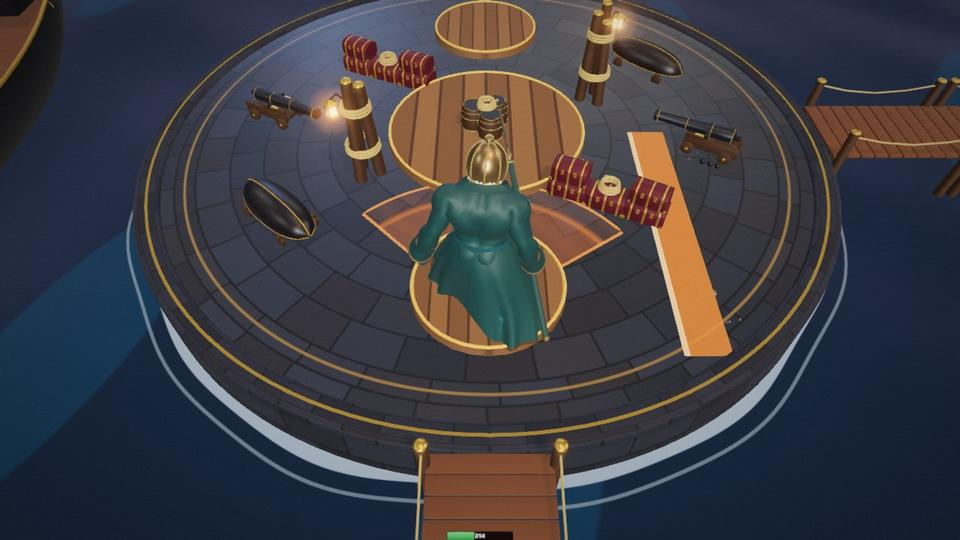
okThe props the probe flagged. Pines on the hills and the cliff top, boats on the sea, houses on their plinths, three shells just under the sand. Nothing in the air.
What was measured
- Reachable from the camp: 34888 m²; 51 spots of the floor's data, 0 cut off
- Props probe: 17 float, 81 gap, 3 buried, 0 in cover (each looked at; see below)
- Grass and small things on ground steeper than 31°: 0
- Packs table for the open world (server/climb-packs.mjs): matches
- Route bot (Lyra): cleared in 1841 game s, every checkpoint reached; 23 kills, 1 falls, stars 1101; ruler tries 2, gate tries 1; page errors 0
- Ruler: The Bell Below (It rings the sea in), model models/tower/sea_judge_v4.glb, loaded yes after 4851 ms of real time
- Frame check at the busiest spot (-65, 29), 6 units awake: median 12.9, 11.6, 11.1 ms, p95 23.1, 21.4, 15.6 ms (desktop, machine shared: rough)
- Console errors while taking the pictures: 0
Not checked: the shared packs online; buying at the trader (card and prices shown)


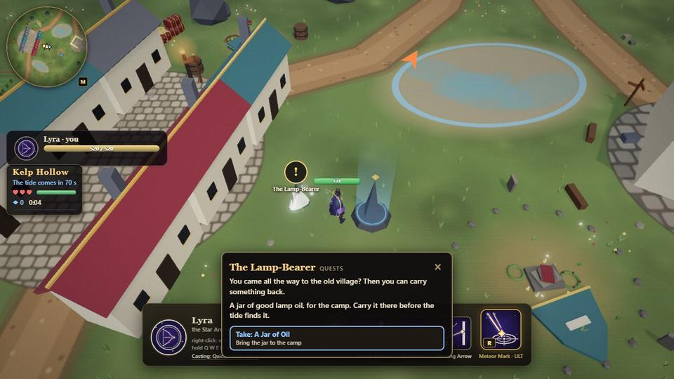

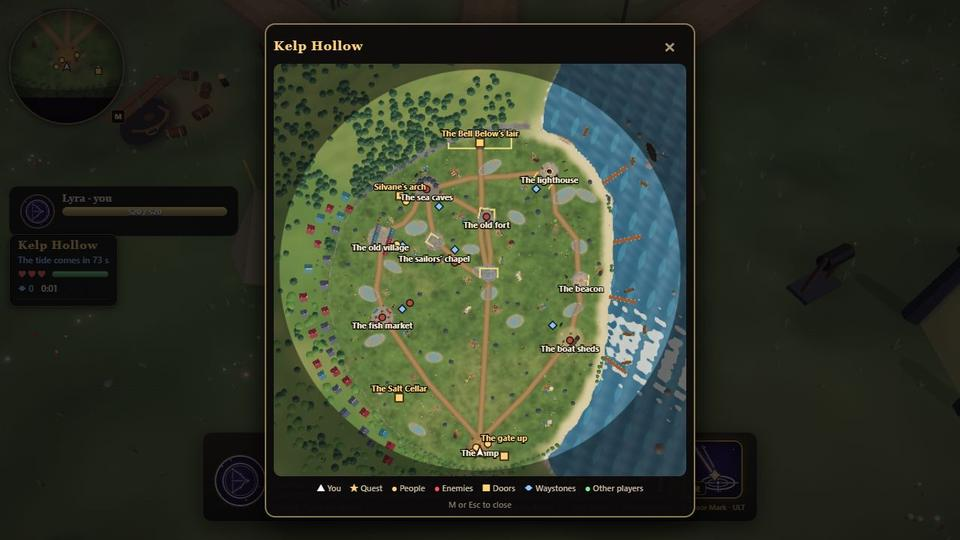

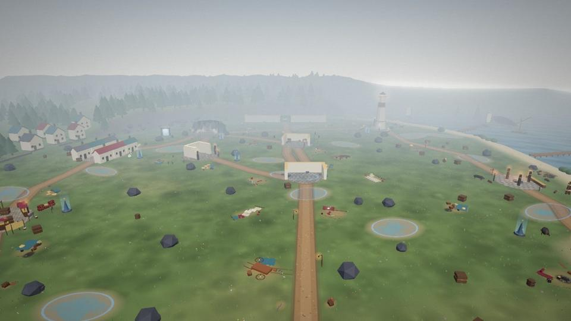
Floor 8: The Anchorage
Plays clean: cleared, no console error, every spot reachable; the rival (Gus), the trial, the ruler (the Lantern Leviathan; the bot's first try lost, the second won) and the gate (Mabel) all played. The Leviathan, “a great fish” in the Codex, is drawn with the Tide Judge's figure: see floor 7's item.
okThe props the probe flagged. Pines on the hills and the cliff top, boats on the sea, houses on their plinths, two stones under the ground. Nothing in the air.
What was measured
- Reachable from the camp: 34910 m²; 51 spots of the floor's data, 0 cut off
- Props probe: 17 float, 67 gap, 2 buried, 0 in cover (each looked at; see below)
- Grass and small things on ground steeper than 31°: 0
- Packs table for the open world (server/climb-packs.mjs): matches
- Route bot (Lyra): cleared in 1819 game s, every checkpoint reached; 24 kills, 1 falls, stars 1101; ruler tries 2, gate tries 1; page errors 0
- Ruler: The Lantern Leviathan (A light that eats ships), model models/tower/sea_judge_v4.glb, loaded yes after 3093 ms of real time
- Frame check at the busiest spot (40, -79), 5 units awake: median 4.2, 3.9, 3.5 ms, p95 8.7, 9, 8.2 ms (desktop, machine shared: rough)
- Console errors while taking the pictures: 0
Not checked: the shared packs online; buying at the trader (card and prices shown)

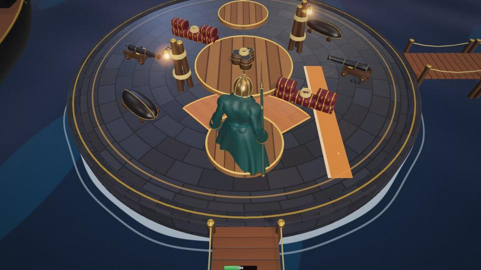

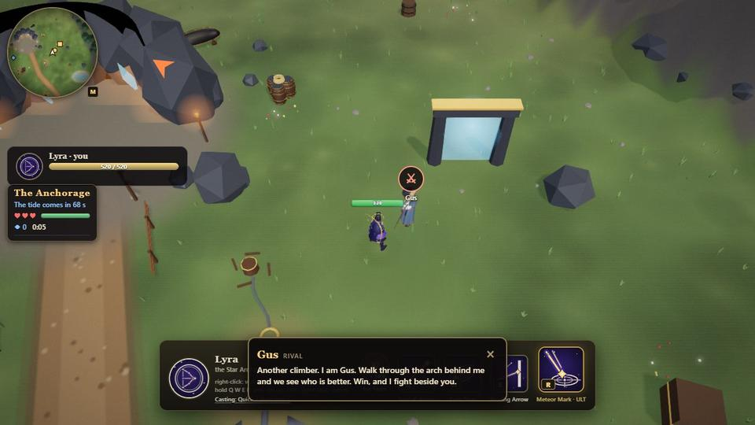

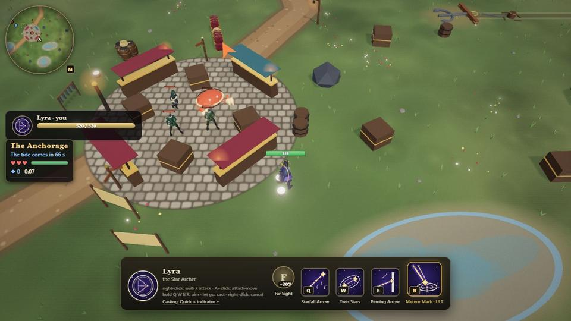

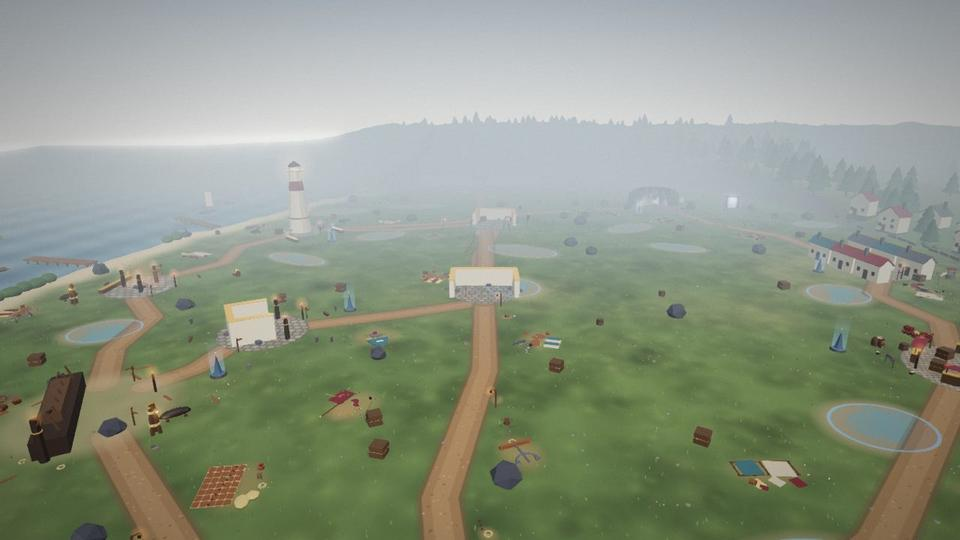
Floor 9: The Brine Steps
Clean: cleared with four stars and no fall, no console error, every spot reachable; the rival (Fenna), the trial, the ruler (the Gull Queen, in her own model) and the gate (Zephyr) all played.
okThe props the probe flagged. Pines on the hills and the cliff top, boats on the sea, houses on their plinths, a tuft under the ground. Nothing in the air.
What was measured
- Reachable from the camp: 34888 m²; 51 spots of the floor's data, 0 cut off
- Props probe: 14 float, 67 gap, 1 buried, 0 in cover (each looked at; see below)
- Grass and small things on ground steeper than 31°: 0
- Packs table for the open world (server/climb-packs.mjs): matches
- Route bot (Lyra): cleared in 1716 game s, every checkpoint reached; 19 kills, 0 falls, stars 1111; ruler tries 1, gate tries 1; page errors 0
- Ruler: The Gull Queen (Wings and anchors), model models/tower/sea_queen_v4.glb, loaded yes after 3461 ms of real time
- Frame check at the busiest spot (-72, 34), 6 units awake: median 4.8, 3.9, 3.8 ms, p95 8.3, 6.5, 5 ms (desktop, machine shared: rough)
- Console errors while taking the pictures: 0
Not checked: the shared packs online; buying at the trader (card and prices shown)

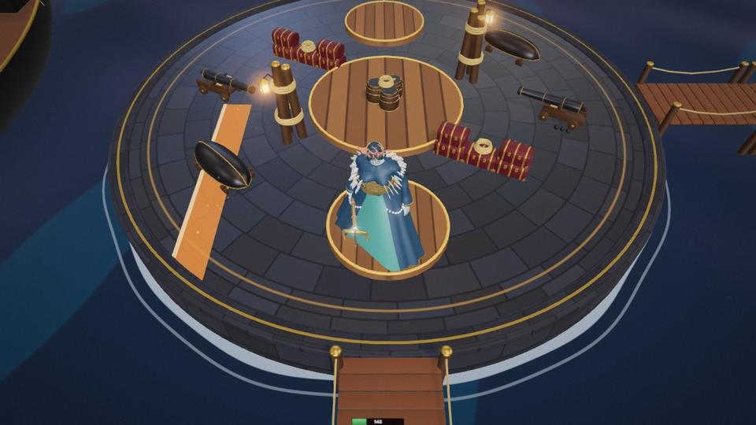

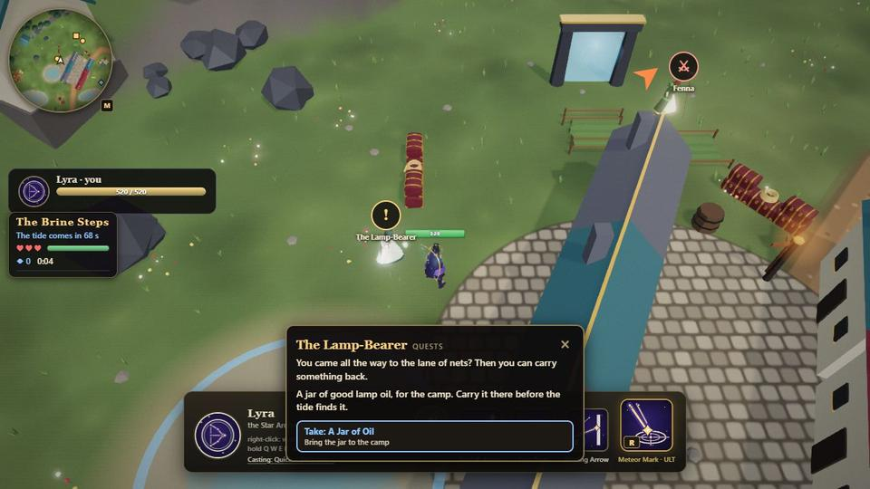

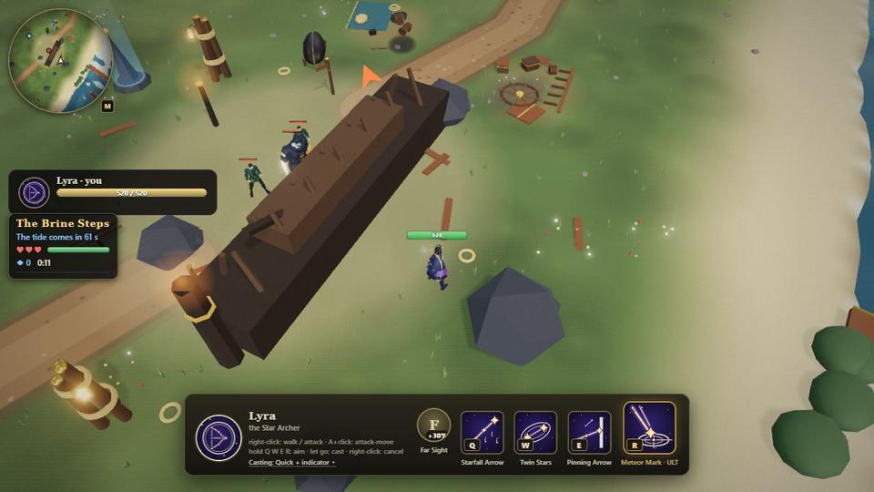

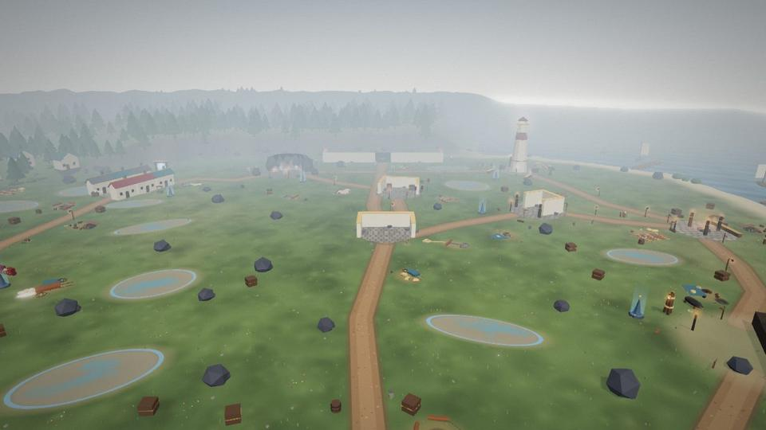
Floor 10: The Crown of the Sea
Clean: the Sea's crown. Cleared with four stars and no fall, no console error, every spot reachable; the Sun Warden (the Raid's boss, its own model, alone in the Sun Court) fought and fell to the bot on the first try; the rival (Isolde), the trial and the gate (Shiori) all played.
okThe props the probe flagged. Pines on the hills and the cliff top, boats on the sea, houses on their plinths. Nothing in the air.
What was measured
- Reachable from the camp: 34825 m²; 51 spots of the floor's data, 0 cut off
- Props probe: 16 float, 67 gap, 0 buried, 0 in cover (each looked at; see below)
- Grass and small things on ground steeper than 31°: 1
- Packs table for the open world (server/climb-packs.mjs): matches
- Route bot (Lyra): cleared in 1776 game s, every checkpoint reached; 23 kills, 0 falls, stars 1111; ruler tries 1, gate tries 1; page errors 0
- Ruler: The Sun Warden (Keeper of the Sun Court), model models/bosses/warden.glb, loaded yes after 4123 ms of real time
- Frame check at the busiest spot (38, -63), 5 units awake: median 5.7, 5.4, 5.7 ms, p95 8.8, 7.6, 10.1 ms (desktop, machine shared: rough)
- Console errors while taking the pictures: 0
Not checked: the shared packs online; buying at the trader (card and prices shown)

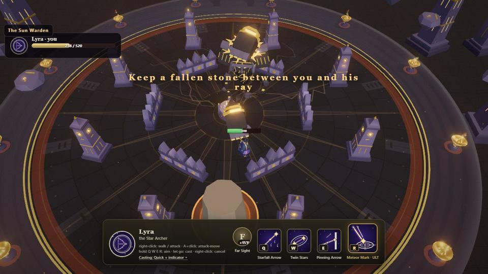

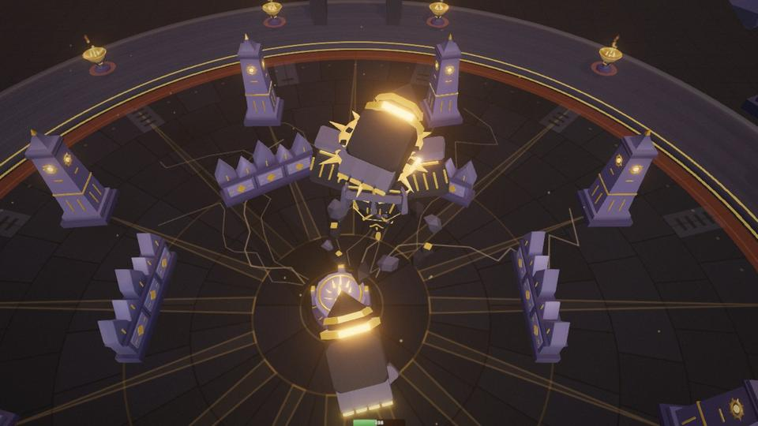

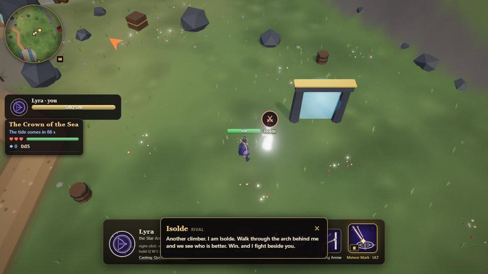

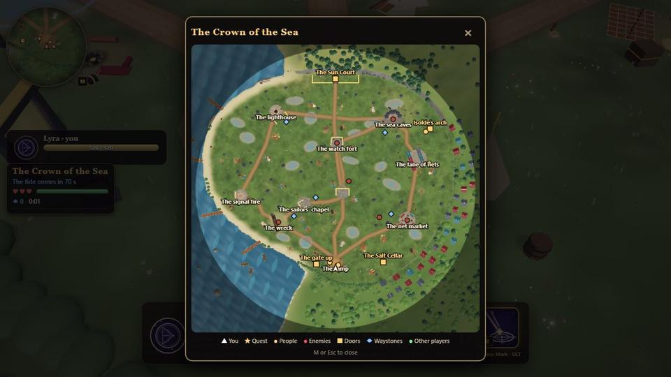

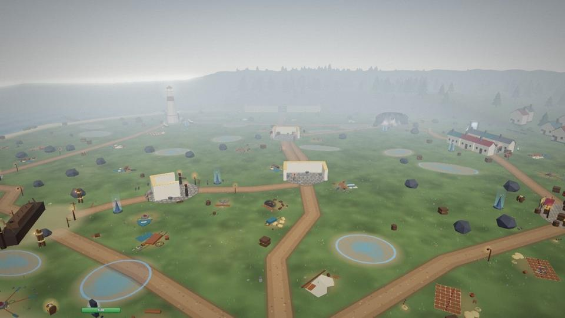
II. The Wood
Floor 11: The Walking Wood
Clean: the Wood's handmade floor. Cleared with four stars and no fall, no console error; every spot reachable in both states of the walking paths; the wisps, the roots, the rival (Nyx), the trial, the Elder Root (own model) and the gate (Fenna) all played; the people and their lines match the Codex (the Moss-Abbess's horn, the Path-Lighter's spore lamps).
okTwo packs the bot never woke. The bramble's thorn sprites and the giants' glade sleep through the bot's route: nothing it is asked to do takes it near them (they spawn and fight as anyone walks in: pictures below).
okThe props the probe flagged. The Wood's trees are its cover, so the probe's thousands of “in cover” are the trees themselves; the “float” are white spore motes drifting in the air (meant), and pines on the hills past the edge; a few leaves lie a hair under the ground.
What was measured
- Reachable from the camp: 31761 m², 31761 m²; 48 spots of the floor's data, 0 cut off
- Props probe: 58 float, 72 gap, 12 buried, 3170 in cover (each looked at; see below)
- Grass and small things on ground steeper than 31°: 0
- Packs table for the open world (server/climb-packs.mjs): matches
- Route bot (Lyra): cleared in 1031 game s, every checkpoint reached; 10 kills, 0 falls, stars 1111; ruler tries 1, gate tries 1; page errors 0
- Ruler: The Elder Root (The heart of the wood), model models/tower/wood_elder_v4.glb, loaded yes after 4725 ms of real time
- Frame check at the busiest spot (-77, 23), 4 units awake: median 6.6, 5.7, 6.5 ms, p95 9.7, 8.4, 8.5 ms (desktop, machine shared: rough)
- Console errors while taking the pictures: 0
Not checked: the shared packs online; buying at the trader (card and prices shown)

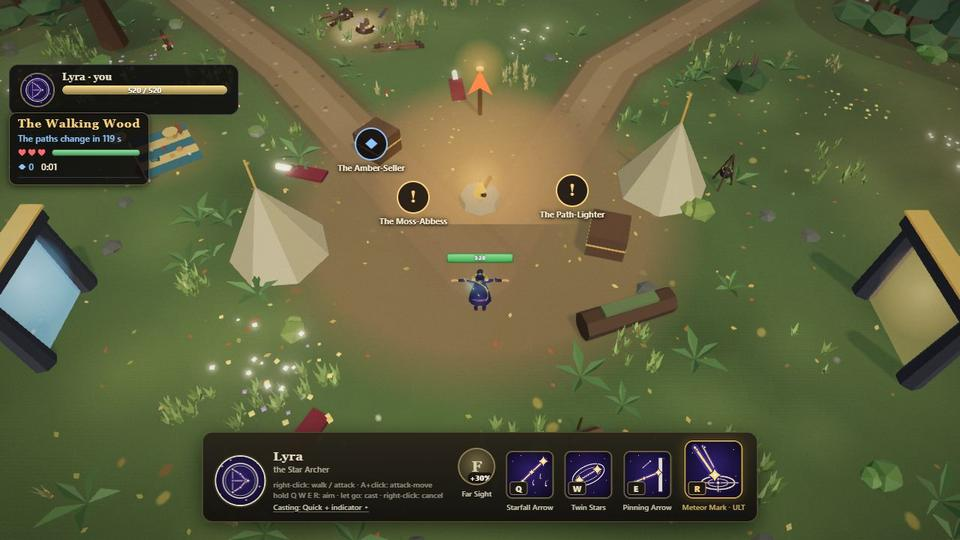

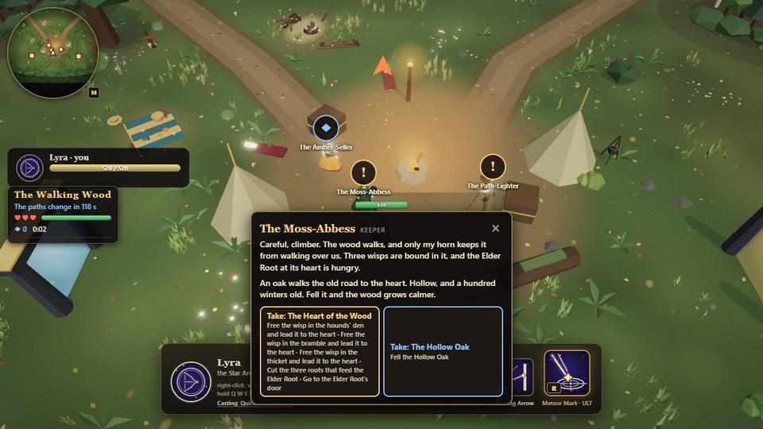

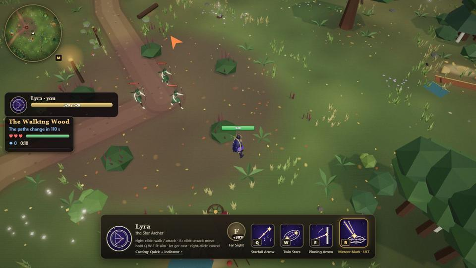

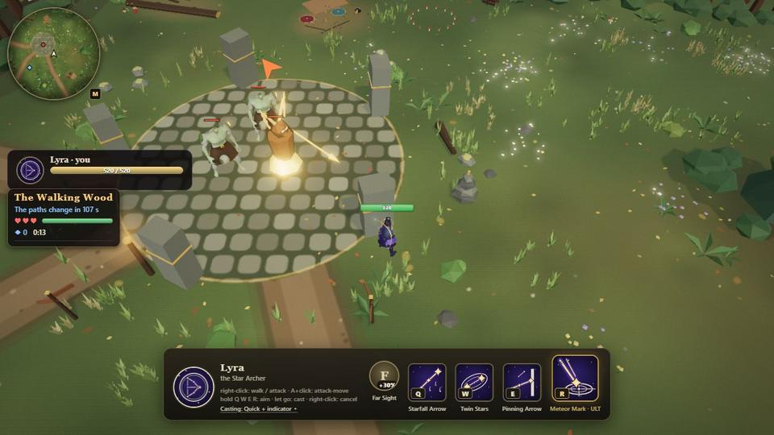

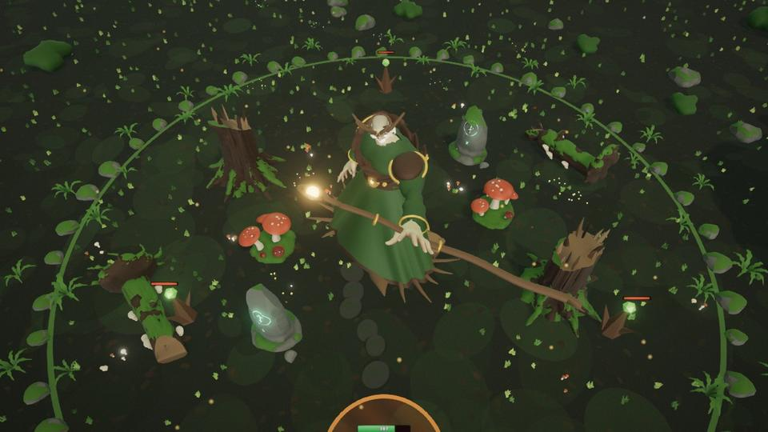

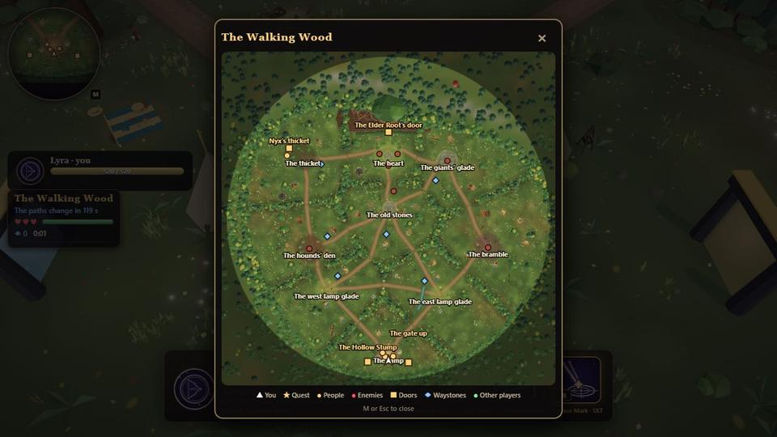

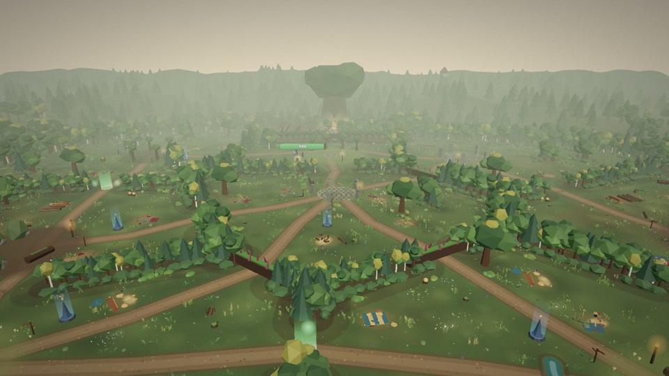

Floor 12: The Mossway
Plays clean: cleared, no console error, every spot reachable in both states of the paths; the wisps, the roots, the rival (Vesper), the trial, the ruler (the Moss Warden, in the Elder's model) and the gate (Nyx; second try) all played. One quest's words fixed.
fixed“The Lost Spade” asked for a bundle. The Wood's maker names the camp giver's second quest “The Lost Spade”, “The Lost Lantern” or “The Lost Bundle”, but its words always spoke of a bundle. Now the thing dropped, carried and named on the HUD is the one in the quest's name (src/tower/world/gen/wood.ts; floors 12 to 20 re-baked: only those words changed, on seven floors; it is still drawn as a bundle in the hand).


okThe props the probe flagged. As on floor 11: the trees are the cover; spore motes in the air; trees on the hills past the edge. Nothing out of place by eye.
What was measured
- Reachable from the camp: 31826 m², 31827 m²; 57 spots of the floor's data, 0 cut off
- Props probe: 57 float, 132 gap, 4 buried, 3174 in cover (each looked at; see below)
- Grass and small things on ground steeper than 31°: 0
- Packs table for the open world (server/climb-packs.mjs): matches
- Route bot (Lyra): cleared in 1421 game s, every checkpoint reached; 21 kills, 1 falls, stars 1101; ruler tries 1, gate tries 2; page errors 0
- Ruler: The Moss Warden (Green over everything), model models/tower/wood_elder_v4.glb, loaded yes after 3436 ms of real time
- Frame check at the busiest spot (-59, 5), 5 units awake: median 4.2, 4.6, 4.4 ms, p95 5.5, 5.7, 5.1 ms (desktop, machine shared: rough)
- Console errors while taking the pictures: 0
Not checked: the shared packs online; buying at the trader (card and prices shown)


Floor 13: Hollowmere
Clean but for one line: cleared with four stars and no fall, no console error, every spot reachable in both states of the paths; the rival (Mabel), the trial, the Thorn Mother (own model) and the gate (Mortis) all played.
fixedThe keeper called the Thorn Mother “it”. “... cut the roots that feed it, and its door opens”, for the Thorn Mother, the Moss Warden, the Antler King, the Briar Witch, and “Ash and Ember waits” on the crown. The Wood's maker now gives each its word: her, him, them (a tree, a root or a bog stays “it”). src/tower/world/gen/wood.ts; floors 12-20 re-baked, only those lines changed (five floors).


okPacks and props. The stag glade's pack slept through the bot's route (nothing it is asked takes it there); the props probe's hits are the Wood's trees, its spore motes and the trees on the hills past the edge.
What was measured
- Reachable from the camp: 31625 m², 31624 m²; 57 spots of the floor's data, 0 cut off
- Props probe: 60 float, 91 gap, 9 buried, 3365 in cover (each looked at; see below)
- Grass and small things on ground steeper than 31°: 0
- Packs table for the open world (server/climb-packs.mjs): matches
- Route bot (Lyra): cleared in 1438 game s, every checkpoint reached; 21 kills, 0 falls, stars 1111; ruler tries 1, gate tries 1; page errors 0
- Ruler: The Thorn Mother (She grows the walls), model models/tower/wood_briar_v4.glb, loaded yes after 5393 ms of real time
- Frame check at the busiest spot (-6, -38), 4 units awake: median 8.8, 8.6, 8.8 ms, p95 12.4, 15.6, 11.7 ms (desktop, machine shared: rough)
- Console errors while taking the pictures: 0
Not checked: the shared packs online; buying at the trader (card and prices shown)


Floor 14: The Thornfold
Clean: cleared with four stars and no fall, no console error, every spot reachable in both states of the paths; the rival (Sirix), the trial, the Antler King (own model) and the gate (Isolde) all played. The keeper's “feed him, and his door” is floor 13's fix.
okPacks and props. The thicket's pack slept through the bot's route; the probe's hits are the Wood's trees, spore motes and the hills past the edge.
What was measured
- Reachable from the camp: 32010 m², 32011 m²; 60 spots of the floor's data, 0 cut off
- Props probe: 58 float, 94 gap, 9 buried, 3112 in cover (each looked at; see below)
- Grass and small things on ground steeper than 31°: 0
- Packs table for the open world (server/climb-packs.mjs): matches
- Route bot (Lyra): cleared in 1449 game s, every checkpoint reached; 20 kills, 0 falls, stars 1111; ruler tries 1, gate tries 1; page errors 0
- Ruler: The Antler King (Crowned in branches), model models/tower/wood_antler_v4.glb, loaded yes after 4659 ms of real time
- Frame check at the busiest spot (-62, -70), 4 units awake: median 6.5, 8.7, 8.6 ms, p95 10.1, 15, 13.6 ms (desktop, machine shared: rough)
- Console errors while taking the pictures: 0
Not checked: the shared packs online; buying at the trader (card and prices shown)


Floor 15: The Antler Glades
Clean: cleared with four stars and no fall, no console error, every spot reachable in both states of the paths; the rival (Sefu), the trial (a horde), the Hollow Elder (the Elder's model, tinted) and the gate (Silvane) all played.
okPacks and props. The standing stones' pack slept through the bot's route; the probe's hits are the Wood's trees, spore motes and the hills past the edge.
What was measured
- Reachable from the camp: 31487 m², 31488 m²; 57 spots of the floor's data, 0 cut off
- Props probe: 56 float, 69 gap, 5 buried, 3283 in cover (each looked at; see below)
- Grass and small things on ground steeper than 31°: 0
- Packs table for the open world (server/climb-packs.mjs): matches
- Route bot (Lyra): cleared in 1314 game s, every checkpoint reached; 22 kills, 0 falls, stars 1111; ruler tries 1, gate tries 1; page errors 0
- Ruler: The Hollow Elder (Older than the paths), model models/tower/wood_elder_v4.glb, loaded yes after 5216 ms of real time
- Frame check at the busiest spot (16, -55), 4 units awake: median 6.4, 8.9, 9.5 ms, p95 11, 12.5, 13 ms (desktop, machine shared: rough)
- Console errors while taking the pictures: 0
Not checked: the shared packs online; buying at the trader (card and prices shown)


Floor 16: Lanternroot
Plays clean: cleared, no console error, every spot reachable in both states of the paths; the rival (Pip), the trial, the Briar Witch (own model, tinted) and the gate (Hank) all played. The bot needed six tries at Hank's gate (the most of any floor so far): a balance note, not a fault.
okPacks and props. The hounds' den slept through the bot's route; the probe's hits are the Wood's trees, spore motes and the hills past the edge.
What was measured
- Reachable from the camp: 31839 m², 31839 m²; 57 spots of the floor's data, 0 cut off
- Props probe: 66 float, 61 gap, 8 buried, 3120 in cover (each looked at; see below)
- Grass and small things on ground steeper than 31°: 0
- Packs table for the open world (server/climb-packs.mjs): matches
- Route bot (Lyra): cleared in 1509 game s, every checkpoint reached; 21 kills, 5 falls, stars 1101; ruler tries 1, gate tries 6; page errors 0
- Ruler: The Briar Witch (Every thorn a word), model models/tower/wood_briar_v4.glb, loaded yes after 3760 ms of real time
- Frame check at the busiest spot (-25, -63), 5 units awake: median 8, 5.1, 5.7 ms, p95 18.9, 7.5, 15.9 ms (desktop, machine shared: rough)
- Console errors while taking the pictures: 0
Not checked: the shared packs online; buying at the trader (card and prices shown)


Floor 17: The Whispering Stand
Plays clean: cleared, no console error, every spot reachable in both states of the paths; the rival (Lyra), the trial, the Lantern Root (in the Antler King's model) and the gate (Bram; second try) all played.
listMeeting yourself as the rival. The bot played Lyra, and floor 17's rival is Lyra: “Another climber. I am Lyra.” Any hero meets this on the floor whose rival (or gatekeeper) is that same hero. The fight is a mirror duel and works. If it should read better: the rival's line could say so when the hero is the same (people.ts builds the card), or the floor could pick another rival for that hero (a design call).

okThe Lantern Root's figure. The Codex's Lantern Root is a root with an amber lantern; it is drawn with the Antler King's stag-crowned figure (RULER_OF). Listed with the other rulers whose Codex form is not a person (floor 7's item).
What was measured
- Reachable from the camp: 31926 m², 31926 m²; 56 spots of the floor's data, 0 cut off
- Props probe: 72 float, 99 gap, 7 buried, 3125 in cover (each looked at; see below)
- Grass and small things on ground steeper than 31°: 0
- Packs table for the open world (server/climb-packs.mjs): matches
- Route bot (Lyra): cleared in 1539 game s, every checkpoint reached; 25 kills, 1 falls, stars 1101; ruler tries 1, gate tries 2; page errors 0
- Ruler: The Lantern Root (It drinks the light), model models/tower/wood_antler_v4.glb, loaded yes after 6948 ms of real time
- Frame check at the busiest spot (23, -72), 4 units awake: median 11.6, 10, 9.9 ms, p95 21.9, 15.7, 13.5 ms (desktop, machine shared: rough)
- Console errors while taking the pictures: 0
Not checked: the shared packs online; buying at the trader (card and prices shown)


Floor 18: Greyoak Deep
Clean: cleared with four stars and no fall, no console error, every spot reachable in both states of the paths; the rival (Cantor), the trial, the Grey Oak (in the Antler King's model: a dead oak in the Codex, see floor 7's item) and the gate (Brannoc) all played.
okPacks and props. Every pack fought and cleared; the probe's hits are the Wood's trees, spore motes and the hills past the edge.
What was measured
- Reachable from the camp: 31882 m², 31881 m²; 59 spots of the floor's data, 0 cut off
- Props probe: 68 float, 133 gap, 4 buried, 3164 in cover (each looked at; see below)
- Grass and small things on ground steeper than 31°: 0
- Packs table for the open world (server/climb-packs.mjs): matches
- Route bot (Lyra): cleared in 1579 game s, every checkpoint reached; 25 kills, 0 falls, stars 1111; ruler tries 1, gate tries 1; page errors 0
- Ruler: The Grey Oak (Bark like a shield), model models/tower/wood_antler_v4.glb, loaded yes after 4448 ms of real time
- Frame check at the busiest spot (-94, 42), 4 units awake: median 10.2, 8.9, 8.1 ms, p95 13.8, 11.6, 10.3 ms (desktop, machine shared: rough)
- Console errors while taking the pictures: 0
Not checked: the shared packs online; buying at the trader (card and prices shown)


Floor 19: The Briar Gate
Clean: cleared with four stars and no fall, no console error, every spot reachable in both states of the paths; the rival (Fenna), the trial, the Mire Heart (in the Thorn Mother's figure: a bog in the Codex, see floor 7's item) and the gate (Kaia) all played.
okThe bot stood still 45 s on its way to a cache: not a stuck spot. The trial's door (the Hollow Stump) stands in the grass on the straight line from the camp's cache to cache c2, so the bot walked into it and the trial began (a door starts its piece when walked into, on every floor); its pause came after, while its goal was stale. Walked again from five spots round the door in both states of the paths, the hero reaches the cache in 13 to 31 s with no stop.
okPacks and props. Every pack fought and cleared; the probe's hits are the Wood's trees, spore motes and the hills past the edge.
What was measured
- Reachable from the camp: 31736 m², 31735 m²; 56 spots of the floor's data, 0 cut off
- Props probe: 63 float, 85 gap, 6 buried, 3160 in cover (each looked at; see below)
- Grass and small things on ground steeper than 31°: 0
- Packs table for the open world (server/climb-packs.mjs): matches
- Route bot (Lyra): cleared in 1459 game s, every checkpoint reached; 26 kills, 0 falls, stars 1111; ruler tries 1, gate tries 1; page errors 0
- Ruler: The Mire Heart (It beats under the moss), model models/tower/wood_briar_v4.glb, loaded yes after 3766 ms of real time
- Frame check at the busiest spot (28, -49), 4 units awake: median 5.5, 4.4, 4.7 ms, p95 7.5, 6.3, 6.2 ms (desktop, machine shared: rough)
- Console errors while taking the pictures: 0
Not checked: the shared packs online; buying at the trader (card and prices shown)


Floor 20: The Crown of the Wood
Clean but for one word: the Wood's crown. Cleared with four stars and no fall, no console error, every spot reachable in both states of the paths; Ash and Ember (the Raid's twin bosses, their own models, in the Cinder Court) fell on the first try; the rival (Anka), the trial and the gate (Tempo) all played.
fixed“Once Ash and Ember has fallen”. The gate's lock spoke of the twin crown in the singular. The Wood's maker now says “have” for them (with floor 13's fix, the keeper already says “Ash and Ember wait ... feed them, and their door opens”). gen/wood.ts; re-baked, only that line changed.
listThe same words on floor 50 (the War's crown, not my chapter). Floor 50 says “Ash and Ember has fallen”, “Ash and Ember is behind” and “Ash and Ember waits behind” (src/tower/world/gen/war.ts, baked in floors/gen/war-50.ts). The fix would be the same as here: a plural verb when the ruler is Ash and Ember, then a re-bake of floors 42 to 50. Left to the agent of floors 31 to 50.
What was measured
- Reachable from the camp: 32043 m², 32042 m²; 60 spots of the floor's data, 0 cut off
- Props probe: 71 float, 97 gap, 10 buried, 3104 in cover (each looked at; see below)
- Grass and small things on ground steeper than 31°: 0
- Packs table for the open world (server/climb-packs.mjs): matches
- Route bot (Lyra): cleared in 1321 game s, every checkpoint reached; 25 kills, 0 falls, stars 1111; ruler tries 1, gate tries 1; page errors 0
- Ruler: Ash and Ember (Keepers of the Cinder Pit), model models/bosses/ash.glb, loaded yes after 5171 ms of real time
- Frame check at the busiest spot (-86, 44), 4 units awake: median 9, 8.2, 8.8 ms, p95 12.7, 14.2, 11.2 ms (desktop, machine shared: rough)
- Console errors while taking the pictures: 0
Not checked: the shared packs online; buying at the trader (card and prices shown)


III. The Sands
Floor 21: The Storm Canyon
Clean: the Sands' handmade floor. Cleared with four stars and no fall through the storms, no console error, every spot reachable; the wells, the caravan, the rival (Vesper, as the Codex has it), the trial, the Scarab Colossus (own model) and the gate (Sefu) all played; the people and their lines match the Codex (the Star-Reader, the Storm-Counter).
okPacks and props. The ridge's slingers and the fort's raiders slept through the bot's route (they fight as anyone walks in: picture). The probe: 47 red rocks at the canyon foot sunk a little into the sand (nothing shows), a house at the cliff foot and a crate on the rocks with a gap the eye does not see, two shrubs on the rim.
What was measured
- Reachable from the camp: 34305 m²; 59 spots of the floor's data, 0 cut off
- Props probe: 2 float, 3 gap, 47 buried, 3 in cover (each looked at; see below)
- Grass and small things on ground steeper than 31°: 3
- Packs table for the open world (server/climb-packs.mjs): matches
- Route bot (Lyra): cleared in 1604 game s, every checkpoint reached; 43 kills, 0 falls, stars 1111; ruler tries 1, gate tries 1; page errors 0
- Ruler: The Scarab Colossus (Under the sand), model models/tower/sands_scarab_v4.glb, loaded yes after 3178 ms of real time
- Frame check at the busiest spot (-80, -61), 3 units awake: median 6.1, 5.2, 3.7 ms, p95 8.1, 15.7, 6.3 ms (desktop, machine shared: rough)
- Console errors while taking the pictures: 0
Not checked: the shared packs online; buying at the trader (card and prices shown)


Floor 22: The Red Wadi
Clean: cleared with four stars and no fall, no console error, every spot reachable; the caravan, the rival (Bram), the trial, the Scarab King (the Colossus's model, tinted) and the gate (Cantor) all played.
listNamed enemies are all “it”. On the made floors the keeper says “Fell it ... while it does” of every named enemy, so the Dune Mother is “her” on floor 21 and “it” here, as are Mother Kelp, Barnacle Bess, the Brine Widow, Grandmother Thorn, the Bark Widow. For beasts and things “it” is right. Giving the women their “her” is a word list in each chapter's maker (sea.ts, wood.ts, sands.ts...) and a re-bake; a matter of voice, so yours to say.
okThe bot's 45 s wait in a storm. Once the bot stood 45 s on its way to a lee during a storm, then went on: the storm's own wait (it shelters until the band has passed), not a stuck spot.
okProps. A mesa past the north edge on its own high ground (the probe measures it against the play ground), a pillar on the sand, red rocks a little sunk at the canyon foot.
What was measured
- Reachable from the camp: 34300 m²; 59 spots of the floor's data, 0 cut off
- Props probe: 1 float, 1 gap, 18 buried, 2 in cover (each looked at; see below)
- Grass and small things on ground steeper than 31°: 1
- Packs table for the open world (server/climb-packs.mjs): matches
- Route bot (Lyra): cleared in 1968 game s, every checkpoint reached; 61 kills, 0 falls, stars 1111; ruler tries 1, gate tries 1; page errors 0
- Ruler: The Scarab King (Crowned in a shell), model models/tower/sands_scarab_v4.glb, loaded yes after 2418 ms of real time
- Frame check at the busiest spot (52, 20), 6 units awake: median 3.3, 3.7, 3.6 ms, p95 5.8, 5.2, 5.4 ms (desktop, machine shared: rough)
- Console errors while taking the pictures: 0
Not checked: the shared packs online; buying at the trader (card and prices shown)


Floor 23: The Glass Flats
Plays clean: cleared with four stars and no fall, no console error, every spot reachable; the caravan, the rival (Sirix), the trial, the Dune Colossus (the Scarab's model, tinted) and the gate (Silvane) all played. One word on the lair's door fixed.
fixedThe lair said “a quest about a seal” for a key. The Sands' maker picks the main quest's item from the brass seal, the sun key and the scarab seal, but the lair's lock always said “The Star-Reader has a quest about a seal.” Here the item is the sun key. Now the lock names the floor's own item (“... a quest about the sun key”). gen/sands.ts; floors 22 to 30 re-baked, only that line changed on each.
okThe bot's 45 s wait in a storm, and the props. A wait in the lee while the storm passed, as on floor 22. The probe: an arch whose pillar stands among the rim's rocks, red rocks a little sunk at the canyon foot.
What was measured
- Reachable from the camp: 34093 m²; 52 spots of the floor's data, 0 cut off
- Props probe: 0 float, 3 gap, 23 buried, 2 in cover (each looked at; see below)
- Grass and small things on ground steeper than 31°: 0
- Packs table for the open world (server/climb-packs.mjs): matches
- Route bot (Lyra): cleared in 1716 game s, every checkpoint reached; 58 kills, 0 falls, stars 1111; ruler tries 1, gate tries 1; page errors 0
- Ruler: The Dune Colossus (A hill that walks), model models/tower/sands_scarab_v4.glb, loaded yes after 2717 ms of real time
- Frame check at the busiest spot (-55, 21), 6 units awake: median 5.8, 7, 6.7 ms, p95 7.6, 9.2, 9.9 ms (desktop, machine shared: rough)
- Console errors while taking the pictures: 0
Not checked: the shared packs online; buying at the trader (card and prices shown)


Floor 24: Caravan Rest
Clean: cleared with four stars and no fall, no console error, every spot reachable; the caravan, the rival (Anka), the trial, the Brass Sphinx (own model) and the gate (Lyra) all played.
okPacks and props. The mud fort's pack slept through the bot's route; the probe: the lair wall's gold edge where it runs into the dune, crates on the rim's slope, red rocks a little sunk at the canyon foot.
What was measured
- Reachable from the camp: 34194 m²; 55 spots of the floor's data, 0 cut off
- Props probe: 2 float, 6 gap, 32 buried, 2 in cover (each looked at; see below)
- Grass and small things on ground steeper than 31°: 1
- Packs table for the open world (server/climb-packs.mjs): matches
- Route bot (Lyra): cleared in 1761 game s, every checkpoint reached; 56 kills, 0 falls, stars 1111; ruler tries 1, gate tries 1; page errors 0
- Ruler: The Brass Sphinx (Riddles and claws), model models/tower/sands_sphinx_v4.glb, loaded yes after 3864 ms of real time
- Frame check at the busiest spot (46, 26), 6 units awake: median 12.8, 11.9, 12 ms, p95 20.7, 19.3, 19.3 ms (desktop, machine shared: rough)
- Console errors while taking the pictures: 0
Not checked: the shared packs online; buying at the trader (card and prices shown)


Floor 25: The Singing Dunes
Clean: cleared with four stars and no fall, no console error, every spot reachable; the caravan, the rival (Sefu), the trial, the Glass Serpent (in the Red Jackal's figure: a serpent in the Codex, see floor 7's item) and the gate (Kaia) all played.
okPacks and props. The kings' tombs' pack slept through the bot's route; the probe: four small shrubs on the high rim (a few cm), crates on the rim's slope, red rocks a little sunk.
What was measured
- Reachable from the camp: 33962 m²; 55 spots of the floor's data, 0 cut off
- Props probe: 4 float, 2 gap, 27 buried, 2 in cover (each looked at; see below)
- Grass and small things on ground steeper than 31°: 0
- Packs table for the open world (server/climb-packs.mjs): matches
- Route bot (Lyra): cleared in 1916 game s, every checkpoint reached; 57 kills, 0 falls, stars 1111; ruler tries 1, gate tries 1; page errors 0
- Ruler: The Glass Serpent (Sand burnt to glass), model models/tower/sands_jackal_v4.glb, loaded yes after 2757 ms of real time
- Frame check at the busiest spot (-56, 26), 6 units awake: median 9.4, 9, 7.9 ms, p95 12.2, 16.8, 10.2 ms (desktop, machine shared: rough)
- Console errors while taking the pictures: 0
Not checked: the shared packs online; buying at the trader (card and prices shown)


Floor 26: The Brass Road
Plays clean: cleared, no console error, every spot reachable; the caravan, the rival (Tempo), the trial, the Mirage Lord (the Sphinx's model, tinted) and the gate (Gus; second try) all played.
okA mesa the probe called floating. A 33 m mesa past the west edge (and one on floor 22) “floats” by the probe's measure, which knows only the play ground; from low beside it, it stands on the outer sand.

okPacks and other props. The old fort's pack slept through the bot's route; the lair wall's gold edge runs into the dune; crates on the rim's slope; red rocks a little sunk.
What was measured
- Reachable from the camp: 34169 m²; 55 spots of the floor's data, 0 cut off
- Props probe: 2 float, 8 gap, 30 buried, 2 in cover (each looked at; see below)
- Grass and small things on ground steeper than 31°: 0
- Packs table for the open world (server/climb-packs.mjs): matches
- Route bot (Lyra): cleared in 2213 game s, every checkpoint reached; 60 kills, 1 falls, stars 1100; ruler tries 1, gate tries 2; page errors 0
- Ruler: The Mirage Lord (Never where it stands), model models/tower/sands_sphinx_v4.glb, loaded yes after 2428 ms of real time
- Frame check at the busiest spot (47, 30), 6 units awake: median 6.3, 6, 5.9 ms, p95 9.9, 11.1, 9.4 ms (desktop, machine shared: rough)
- Console errors while taking the pictures: 0
Not checked: the shared packs online; buying at the trader (card and prices shown)


Floor 27: The Dry Wells
Plays clean: cleared, no console error, every spot reachable; the caravan, the rival (Mum), the trial, the Sand Tyrant (the Red Jackal's model, tinted) and the gate (Nyx; second try) all played.
okThe shut lair holds. Checked because a picture run seemed to start the ruler early (it was the run's own door, at the end): from five spots outside, on floors 2, 12, 22 and 27, a hero walking at the shut lair never starts its fight; the door only opens to the quest (scenery.ts `ready`). On floors 2, 22 and 27 the hero can walk round the end of the shut wall and stand on the door's spot; nothing happens there.
okThe Sand Tyrant hits hard early. A hero who stands still in his hall falls in about 7 s (the bot, fighting, won with nearly all its health): a boss, not a fault.
okProps. A mesa past the north edge on its own high ground, the lair wall's gold edge into the dune, crates on the rim's slope, red rocks a little sunk.
What was measured
- Reachable from the camp: 34030 m²; 58 spots of the floor's data, 0 cut off
- Props probe: 3 float, 4 gap, 21 buried, 2 in cover (each looked at; see below)
- Grass and small things on ground steeper than 31°: 0
- Packs table for the open world (server/climb-packs.mjs): matches
- Route bot (Lyra): cleared in 2126 game s, every checkpoint reached; 59 kills, 1 falls, stars 1101; ruler tries 1, gate tries 2; page errors 0
- Ruler: The Sand Tyrant (Every grain obeys), model models/tower/sands_jackal_v4.glb, loaded yes after 1644 ms of real time
- Frame check at the busiest spot (-57, 25), 6 units awake: median 3.5, 4.1, 3.6 ms, p95 5.4, 6.2, 6 ms (desktop, machine shared: rough)
- Console errors while taking the pictures: 0
Not checked: the shared packs online; buying at the trader (card and prices shown)